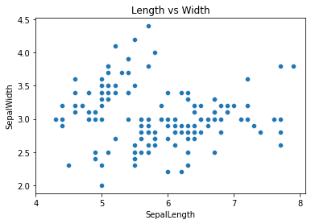

Visualizing Association#
import pandas as pa
import matplotlib.pyplot as plt
import seaborn as sns
df = pa.read_csv('https://raw.githubusercontent.com/nurfnick/Data_Viz/main/Data_Sets/iris.csv')
Scatter Plots#
The most important visualization is the scatter plot. It will help us see association between two (or possibly more) variables.
ax = sns.scatterplot(data = df, x = 'SepalLength', y = 'SepalWidth')
ax.set(title = "Length vs Width",
xticks = [x for x in range(4,9,1)])
plt.show()

The nice part about seaborn is I can add other aspects quickly.
sns.scatterplot(data = df, x = 'SepalLength', y = 'SepalWidth', hue = "Class")
<matplotlib.axes._subplots.AxesSubplot at 0x7fcb127e8b90>

I can pick the colors I want too! Here I do it with a dictionary.
colors = ['blue', 'green','orange']
colordict = {}
for i,name in enumerate(df.Class.unique()):
colordict[name] = colors[i]
sns.scatterplot(data = df,
x = 'SepalLength',
y = 'SepalWidth',
hue = "Class",
palette = colordict )
<matplotlib.axes._subplots.AxesSubplot at 0x7fcb1226fa10>

If you prefer you can change the marker
sns.scatterplot(data = df,
x = 'SepalLength',
y = 'SepalWidth',
hue = 'Class',
style= 'Class' )
<matplotlib.axes._subplots.AxesSubplot at 0x7fcb122cc0d0>

We can vary the size of each entry too.
ax = sns.scatterplot(data = df,
x = 'SepalLength',
y = 'SepalWidth',
hue = 'Class',
size = 'PedalWidth')
sns.move_legend(ax, "upper right", bbox_to_anchor=(-.2, 1))

Adding the line of best fit (or regression) is easy.
sns.regplot(data = df,
x = 'SepalLength',
y = 'SepalWidth',
ci = False, #I removed the confidence interval!
order = 1)
<matplotlib.axes._subplots.AxesSubplot at 0x7faf7ce3a090>
sns.lmplot(data = df,
x = 'SepalLength',
y = 'SepalWidth',
hue = 'Class',
ci = False )
<seaborn.axisgrid.FacetGrid at 0x7faf7cd321d0>

Often it is nice to look at all of the associations in your data quickly.
g = sns.PairGrid(df, hue="Class")
g.map_diag(sns.histplot)
g.map_offdiag(sns.scatterplot)
g.add_legend()
plt.show()

Heat Map#
Heat maps show correlation quickly between the variables. You’ll need to pass the correlation to make the map work.
sns.heatmap(df.corr(), annot=True, linewidths=0.5,vmin = -1)
<matplotlib.axes._subplots.AxesSubplot at 0x7faf793a4b10>

Your Turn#
Using the workout dataset, create a scatterplot with as many features as possible. Can you get 5 or six variables represented in one graphic?